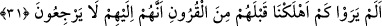

Bir hadîste şöyle buyrulmuştur: “Dünyada insanlarla alay edenlere kıyamet günü
cennet kapılarından bir kapı açılır. Onlara “Gelin gelin” denir. Onlardan birisi derd
ve tasayla dolu olarak cennetin kapısına gelir gelmez kapı onun yüzüne kapatılır.
Sonunda ona kapı açılıp oraya dâvet edildiği halde kapıdan gireceğinden ümid
kestiğinden dolayı bu çağrıya icabet etmeyinceye kadar ona böyle yapılmaya devam
edilir.”[129]
Mâlik b. Dînar der ki: “Davud (a.s.)’ın Zebur’unda şunu okudum: Zâlim ve bozguncu
idarecilerin yolundan gitmeyen, çok hatâ işleyenlerle oturup kalkmayan ve alay
edenlerin alaylarına dâhil olmayanlara ne mutlu!”
Mesnevî’de der ki:
Dükkânda eskicilik, yamacılık ediyorsun
Bu dükkânının altında da iki maden gömülüdür!
Bu dükkân kiralıktır..
Çabuk ol, kazmayı al da dibini kaz!
Ansızın kazmayı madene vurursan
Dükkândan da kurtulursun, yamacılıktan da!
Yamacılık dediğin nedir? Su içmek, yemek yemek.
Bu yamalarla köhne hırkanı yamar durursun!
Bu beden hırkası daima yırtılır..
Sen de bu yemekle, içmekle onu yamarsın!
Bu dükkânın dibini bir parçacık kaz da
O iki maden, başını yüceltsin!
Bu kiralık evin kira müddeti bitmeden kendine gel..
Yoksa bu müddet biter, sen de ondan bir fayda elde edemezsin!
Sonra dükkân sahibi, seni dükkândan çıkarır;
Bu dükkânı da hazineyi elde etmek için yıkar.
Sen gah hasretle başına vurursun;
Gah ham sakalını yolar durursun!
Yazıklar olsun; bu dükkân benimdi..
Kör müydüm ki buradan bir fayda elde etmedim!
Yazıklar olsun, bu bizimdi yel götürdü!
Biz kullara ebediyen eyvahlar olsun demek kaldı, dersin!
31. Müşrikler görmüyorlar mı ki, onlardan önce nice kavimler helâk ettik. Onlar
tekrar dönüp de bunlara gelmezler.